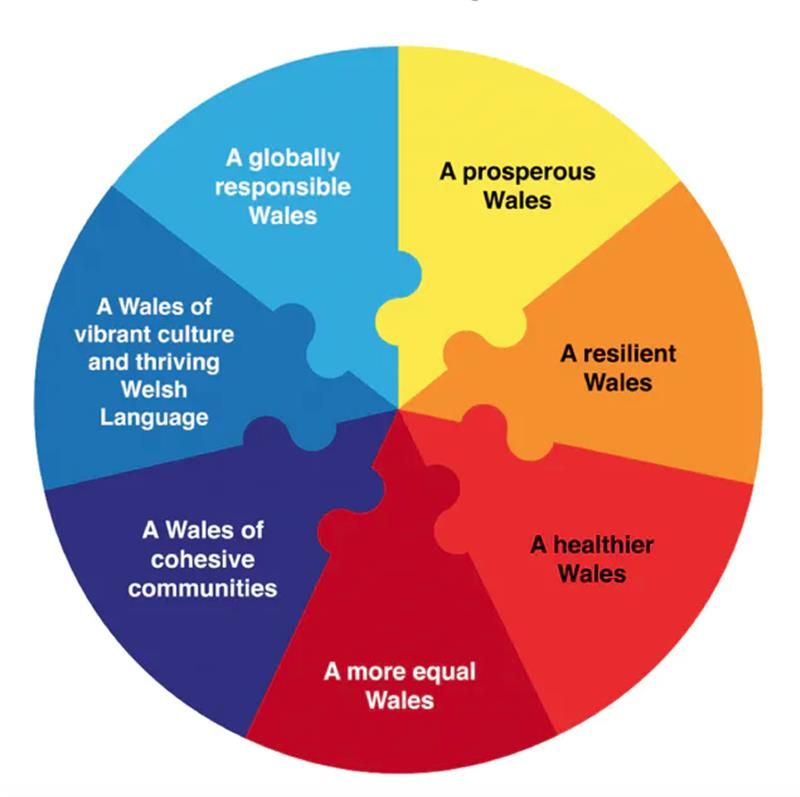

Kameel4u/Shutterstock.com
How to create a government that considers future generations
December 31, 2020 11.01am GMT
Author
Professor in Legal Studies, Swansea University
This year – 2020 – has been shocking. If I try to find a silver lining, I think it might be this – that finally, the need for effective planning to address long-term problems has come under the spotlight around the world.
A pandemic planning committee had been scrapped six months before coronavirus hit the UK – despite the fact that the threat from a pandemic had been known for some time. Similarly, an early warning programme to alert the government in the United States to pandemics was ended three months before COVID-19 began infecting people in China. Presumably lessons will be learned here.
The response to the COVID-19 pandemic has consumed political and media attention. But there are other long-term crises on the horizon that have had equally insufficient long-term planning. Many believe that democratic politics is too myopic: the horizons of politicians are restricted to the next election. I agree: short-termism in governance needs to be urgently addressed.
As we career towards escalating climate and biodiversity crises, interest has increased in what we can learn from examples of sustainable living, particularly from indigenous communities. For example, Iroquois philosophy, contains the “seventh generation principle”: the impact of any decision must be considered in the context of the next seven generations.
Legislating sustainability
In Wales, this ancient wisdom has been turned into legislation. It is the only nation in the world in which the need to protect future generations is embedded into law, and it has made sustainable development the organising principle of government. This means that the needs of the present should be met without compromising the needs of future generations.
The UN has described the Wellbeing of Future Generations (Wales) Act, which was introduced in 2015, as world-leading. The act, which I recently published research on, requires all 44 public bodies in Wales to work towards seven goals.

The seven Welsh wellbeing goals. Richard Owen, Author provided
Frustrated sustainability champions, who want to see change, can use the act as the support and permission they need to challenge the system. The sustainable development principle requires public bodies to work collaboratively, and listen to what people say. This has led to revised local wellbeing plans where, for example, poor public transport is seen as fuelling poverty.
The Welsh government and public bodies can be held to account if they fail to comply with the sustainable development principle. A post – the future generations commissioner for Wales – has been created. This person – currently Sophie Howe – has statutory powers and is independent of government. She has “name and shame” powers to challenge unsustainable practice.
In 2019, she worked with civil society and used her influence to prevent a planned motorway being built. The Welsh government decided to reject it on grounds of both cost and the environment.
Other approaches
Some other countries have also introduced a longer term perspective to policy making. For example, Hungary introduced a commissioner for future generations in 2008. However, the commissioner’s powers were later reduced, probably because the commissioner intervened in over 200 cases a year.
Singapore’s approach has been to develop a government agency, the Centre for Strategic Issues. It identifies whole-of-government priorities early, strengthens coordination across ministries and agencies to address these priorities, and translates them into policy plans.
The United Arab Emirates, meanwhile, have established a Ministry of Possibilities. This is a virtual ministry which applies design-thinking and experimentation to develop new solutions to tackle critical issues.
And Finland has taken the approach of enhanced parliamentary scrutiny. Its Committee for the Future, was established in the 1990s. The Finnish government and parliament recognise complex issues at an early stage. They devise different alternative policies collaboratively while they are still under development. This is known as forward-looking scrutiny. Instead of parliamentary scrutiny of decisions which have already been taken, parliament scrutinises governmental plans for the future.
Other countries have taken participatory approaches. Scotland’s Futures Forum is a channel for public engagement with the Scottish Parliament by encouraging dialogue on long-term issues. The United Kingdom, Ireland and France have used citizens’ assemblies. The assemblies in Ireland are considered to have been successful in developing a broad consensus in changing the law on abortion and same sex marriage.
Another approach has seen attempts to pivot the management of the economy away from a focus on GDP to instead consider a wider range of wellbeing objectives. New Zealand has adopted a Wellbeing Budget with five priority areas.
Enforcing sustainability law
So has all this had any tangible effects? The Welsh Wellbeing of Future Generations Act has led to behavioural change in policy. Planning, for example, has been strongly influenced by sustainability issues. Under new laws influenced by the act, people can circumvent tight planning rules so long as they build an eco-home in the countryside and live sustainably off the land on which it sits.
But it has found less favour in the courts. In 2019, a high court judge described it as “vague, general and aspirational”. A UK Future Generations Bill currently before the UK parliament, which has been strongly influenced by the Welsh model, has stronger enforcement mechanisms.
But there may be advantages to the current weak enforcement mechanisms in the Welsh Act. Israel had a Commission for Future Generation with an “effective veto” on legislation, but it was disestablished in 2016. As in Hungary, its wide-ranging powers may have been a factor in its demise. The situation in Wales may be transitional. Stronger powers may follow when the act is better established.
Current international crises have shown the need for long-term planning and the need to change political systems to better achieve this. Although there are different approaches to long-term planning across the world, the Welsh model is currently the most comprehensive and integrated. This is not to say that it cannot learn and be influenced by other approaches: it is actively seeking to do so.
SOURCE: THE CONVERSATION